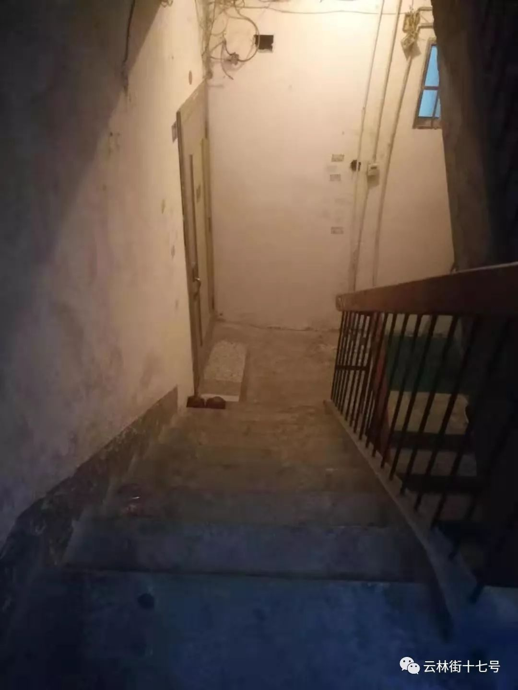

武汉现在的120，相当于一辆的士
原文链接 备份链接 武汉交通管制后，路面上都是120的车子不停地跑，极少有私家车及的士 （摄影：远征、高星） 武汉从没有如此空旷，市民们避居在家，只有医院人口密集。 疫情还在扩散。 根据湖北卫健委的数据，1月29日0时-24时，湖北省新增 …

没有床位，疑似病人的生命不断被消耗。无法确诊，无处可逃的，除了病人，还有绝望的家属。
文 | 邓芷莹
和小姜联系以来，我的作息也变成了每天凌晨三点入眠，陪她等救护车。
小姜的外公今年八十七岁，高度疑似新冠肺炎重症感染者。家里只剩她和快六十岁的母亲。交通管制后，没人没车，要送外公上医院打针，她们只能靠凌晨打110、120碰运气。

和小姜的聊天记录
以下是小姜的自述：
我今年32岁，女，单身未婚，在交警大队做辅警。我外公今年八十七岁，重症疑似。
我们的每天，从夜晚10点，打电话碰运气叫110和120，送外公上医院打针开始。
我们白天不敢上医院去。
外公第一次到医院，排队挂号，见到医生等了五六个小时。开完化验单，排队做CT又是两个小时。我们还得拿着轮椅推他回家，扛他上楼。人回来了也不睡，睡不着，不停地喘。
他的病已经很重了，我们不敢再这样磨，怕病没看上，人就给磨没了。凌晨到医院排队打针，人会少一点，只用等三四个小时，外公能少受点罪。
但打110和120也不是每次都能等到车的。
别人愿意来就来，不来就不来，他们也害怕。等不到车，没有担架，我就和妈妈自己背外公下楼梯，再用轮椅推着去医院，走一个小时。

下楼的楼梯
前天接电话的民警很好，半夜两点了还愿意来送我们去医院，可是我们也不能让人家等着再送我们回来。说实话，接送这种病人谁心里不发毛？
凌晨打完针，我们自己用轮椅推着外公走回家，把他弄上楼。等他休息了，母亲才肯眯一会。母亲眯上了，我才能闭一会眼睛。
希望今天运气好一点，能等到110和120派车。希望外公能在等到床位前，多熬一天。
外公的命运太不好了。
他16岁从军，到哈尔滨读军医，准备抗美援朝上战场。还没毕业，战争就结束了。在部队当军医快三十年，是复员专业的老战士。76年转业到地方工厂。那几年工厂垮台，就下岗了。
外公有老年痴呆，一直在小区里的养老院住。感冒之前身体特别好，根本看不出来八十七岁，别人都以为他只有七十。
华南海鲜市场离我家仅1公里，当时根本没有在意。
当时政府说华南有疫情，把华南海鲜给关闭了，根本没有提及疫情的严重程度。我们小区离华南这么近，封城前一天，大家都还没有要戴口罩的意识。
20号之前，大家都开心地置办年货，因为政府一直说没有发现人传人的迹象，很肯定说大概不会人传人。
求助下的网友评论
一开始我们以为是普通的感冒发烧，不敢去医院。后来发烧反复，持续七八天都退不下来，一天比一天严重，最后开始呼吸急促。
我们没办法了，只能去医院。医生看了结果就说是高度疑似，没有盒子做确诊，不确诊就不能收治，给我们开了单子每天来医院打针。
他只生了我的母亲一个，我母亲也只有我一个孩子。外婆过世多年，我爸妈在我很小的时候就离异了，现在家里只有我们仨相依为命。
等不到车，等不到人，就只能我来扛。
现在外公住在里屋，我和母亲住客厅。我老和母亲吵，让她不要上那个屋去，会感染。她老是不听，一直要上那个房间照顾外公，给他端水、送饭、擦洗，看他呼吸得过不过来。
她说“那是我爸”，可她也是我妈呀。

自制的防护措施
我害怕外公走了，她也要走了，那我也只能走了。
我每天都在给不同的医院打电话，希望早点收治隔离，但哪里都没有床位。只能熬在家里打针。
说实话，这个事刚发生的时候，我无感。慢慢地觉得愤怒。到现在自己家人得了这个病，有可能我也感染了，我已经没有愤怒了，只有害怕和崩溃。
我也不想出门，也想在家好好隔离啊。可是不出门，谁送外公去打针？
我不知道外公还能熬多久，我也不知道，他要是死在家里了，我们怎么办。我所需要的，是一个隔离床位，是收治。是救命，救我们一家三口的命。
打医院的电话、打求助热线、打110、120、发求助帖子，我都已经试过了，我已经没有任何办法了。现在，外公呼吸困难了，他在不停地说，“去医院，带我去医院”。
我好心疼。可是，我怎么去？

小姜的“遗书”
我父亲和奶奶还不知道这个事。
他们不能知道，我不想再害多一个人进来了。
后记
2020年2月2日晚，我在小姜家里见到了她，外公已经病重无法呼吸。
18:28 我们叫了救护车
19:43 救护车抵达，两位男护士用担架将外公抬下楼
20:10抵达协和医院发热门诊，被告知需要挂号。当天号已经取完，得等到过凌晨后取号才能看医生就行救治
20:20 外公无法呼吸，护士帮忙挂上吸氧瓶，血氧饱和度从55%升到84%
21:00 外公撑不住了，被告知只能等待过零点取号，在急诊室熬一夜，明早看医生，床位未知
21:24 拨打各个热线，江汉区政府推到健康热线，健康热线推到社区书记后，社区书记表示，“我会和街道反应的。我没有办法，我的个人建议是，你们就死赖在医院”
21:50 一具尸体从我们面前抬出去
22:00 外公用微弱的气息哼哼，“不看了不看了 回屋头去 我想死屋头”
22:30 在110、社区叫车均被拒绝的情况下，我们选择给外公盖上厚厚的棉被，推轮椅回家
（请能提供床位和救助信息的朋友，联系邓芷莹 13371696978）
「云林街十七号」
推出征集活动
无论你是医护人员、患者，还是普通人
都可以点击“阅读原文”
和我们联系


点击阅读原文，报名参与“故事征集”。
原文链接 备份链接 武汉交通管制后，路面上都是120的车子不停地跑，极少有私家车及的士 （摄影：远征、高星） 武汉从没有如此空旷，市民们避居在家，只有医院人口密集。 疫情还在扩散。 根据湖北卫健委的数据，1月29日0时-24时，湖北省新增 …
原文链接 备份链接 “等到那个时候，他已经过了奈何桥，在黄泉路上走好远了，人间的吹吹打打他哪还听得见？” 配图 | 《四个春天》剧照 前 言 从2019年12月8日首例武汉新型冠状病毒肺炎患者出现，到2020年1月20日疫情的全面爆发， …
原文链接 备份链接 03.02.2020本文字数：2583，阅读时长大约4.5分钟 导读：随着疫情扩散，确诊和疑似病患增多，病人能否求得一张床位备受关注，目前重灾区通过新建、改建、扩建形式增加床位，确保“应住尽住、应收尽收”。 作者 | …
原文链接 备份链接 赵平和冯安，武汉一对年逾60的夫妻，妻子赵平先感染，因为医院床位不足，只能自行居家隔离，丈夫冯安随后也被感染。身在武汉，他们是为数众多的，等不到床位、无法确诊、甚至没有资格计入统计数字的人。他们没有从医生口中听到“确 …
原文链接 备份链接 输不上血小板，母亲的血象每况日下。一向羞于求人，兢兢业业照顾母亲的小雯开始呼救，「在这样的天灾人祸面前，我妈妈这样的病人，可能成为了不计一切代价中间的‘代价’」。 文 | 徐玮超 （应当事人要求，声音已处理） 跟小雯取 …